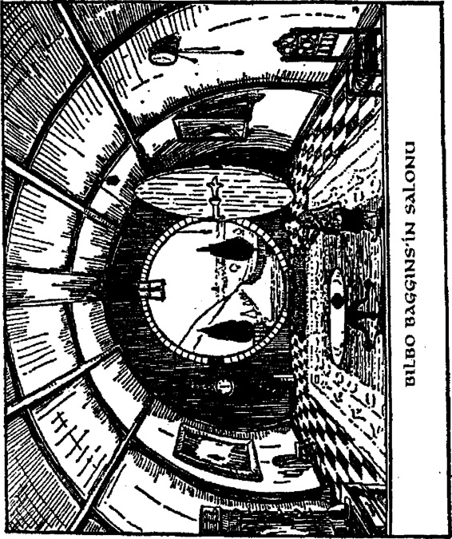

asılmış kırmızı siyah, koca bir duyuru,
Haziranın Yirmiikisinde Grubb
Beyefendiler, Grubb ve Burrowes'ın
Hobbitya, Tepealtı, Bag-Yaka'dan
Merhum Bilbo Baggins Cenaplannın
Eşyalarını açık arttırmayla satacağını
söylüyordu. Satış tam saat onda
başlayacaktı. Şimdi nerdeyse öğle
yemeği vaktiydi eşyalann çoğu nerdeyse
yok pahasından eski şarkılara (bu açık
arttırmalarda bayağı olağandı) dek
değişik fiyatlarla satılmıştı. İşin aslı
Bilbo'nun kuzenleri Sackville-
Bagginsler, kendi eşyalarının buraya
sığıp sığmayacağını öğrenmek için
odalarını ölçüp biçiyorlardı. Kısacası
Bilbo 'Olası Ölüydü ve bunu söyleyenler
arasında bu olasılığın doğru olmamasına
üzüldüğünü söyleyen çıkmadı.
Bay Bilbo Baggİns'in dönüşü, Tepe'nin
üstünde ve Tepe'nin altında ve Su'yun
öte tarafında epey çalkantı yarattı. Bu
dokuz günlük mucizeyi de aşıyordu.
Resmi sıkıntıysa gerçekte yıllar sürdü.
Bay Baggins'in yaşadığının kabul
edilmesi uzun zaman aldı. Özellikle de
Satış'ta iyi alışveriş yapmış olanlan ikna
etmek zor oldu; ve sonunda zaman
kazanmak için Bilbo kendi eşyasının
çoğunu geri satın almak zorunda kaldı.
Gümüş kaşıklannın çoğu akıl almaz bir
şekilde ortadan kayboldu ve nasıl olduğu
açıklanamadı. Bilbo kendi adına
Sackville-Bagginsler'den şüphelendi.
Onlarsa, geri dönen Baggins'in gerçek
olduğunu asla kabullenmediler ve ondan
sonra da Bilbo'yla ilişkileri arkadaşlık
sınırlan dışında kaklı. Gerçekten de onun
nefis hobbit-kovuğunda yaşamayı çok
istemişlerdi.
Gerçekte Bilbo kaşıklanndan çok daha
fazla şey kaybettiğinin farkına vardı -
saygınlığını kaybetmişti.
Ondan sonra hep bir elf-dostu olarak
kaldığı ve cücelerin, büyücülerin ve o
tarafa yolu düşen bu türden halkın
saygısını kazandığı doğruydu; ancak
artık pek saygıdeğer değildi. İşin aslı
yöredeki tüm hobbitler tarafından 'kaçık'
olarak nitelendirildi - Took tarafından
kuzenler ve 322

yeğenleri dışında, ki onların arkadaşlığı
da yaşlılar tarafından hoş
karşılanmıyordu.
Onun buna aldırmadığını söylemekten
üzüntü duyuyorum. Halinden oldukça
hoşnuttu; ve şöminenin üzerindeki
çaydanlığının sesi Beklenmedik Partinin
öncesindeki sessiz günlerde olduğundan
çok, çok daha ahenkliydi. Kılıcını
şömine rafının üzerine astı. Zırh örtüsü
salonda bir askıya oturtulmuştu (bir
müzeye verene dek).